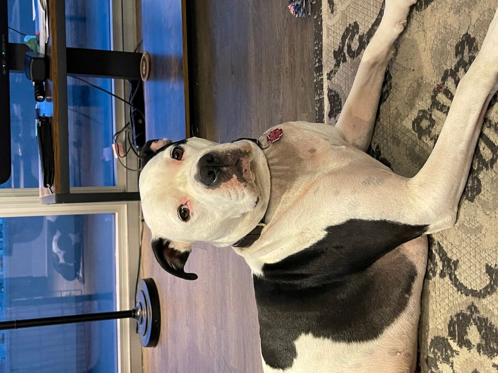

Ali Agha
123 Acme Ave.
aagha3@hawk.illinoistech.edu
Currently holding the position of Region 5 Data Manager at the Environmental Protection Agency, my career has spanned 30 years. I have head prestegious titles such as Recruitment Manager, Talent Acquisiton Manager, Sr. Technical Recruiter, Boat Crewman, Data Manager, and the most important of all : Daily Herald Paperboy
An acheivement for me was the pursuit of education in my 50's. While sitting in class with people almost a 1/3 my age can be intimidating, i enjoy the learning. A great asset to my education is Hercules!
